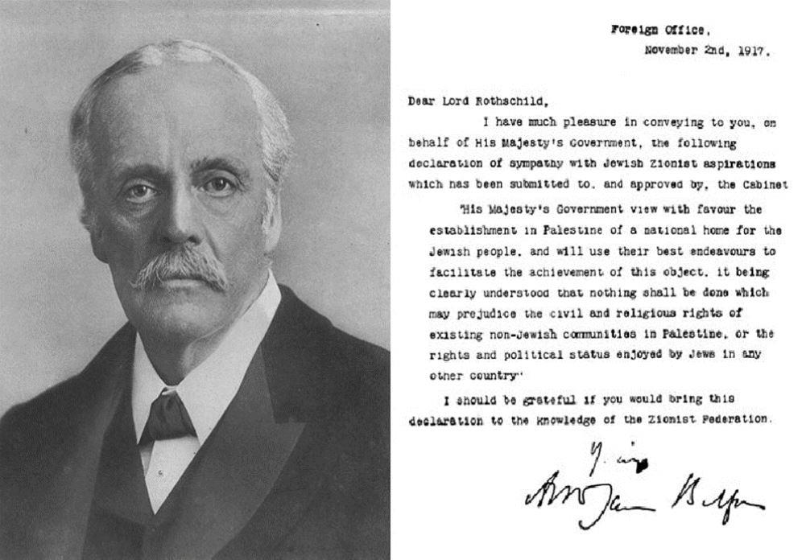
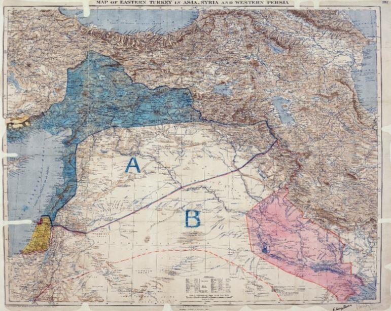
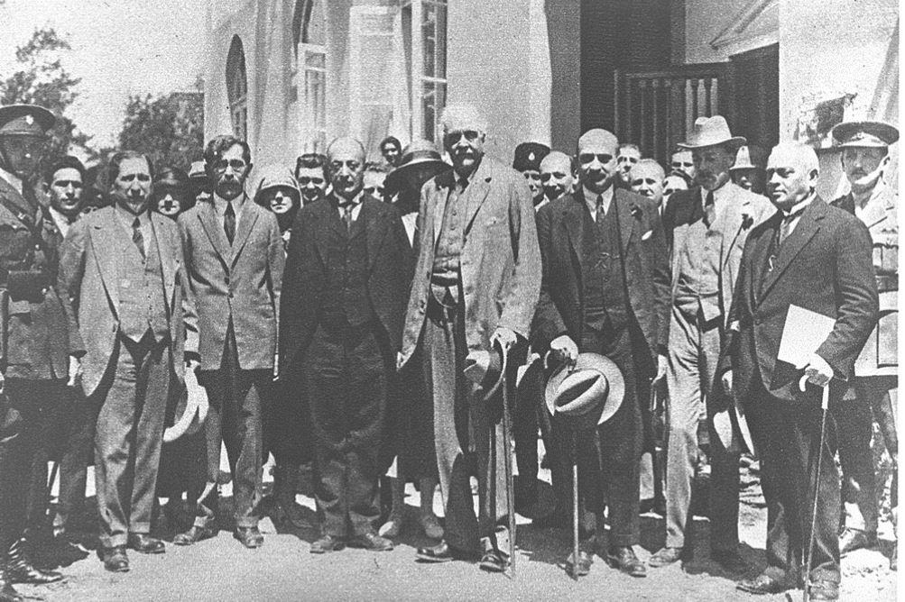

Il y a tout juste un siècle, le 02 novembre 1917, Lord Balfour, Ministre des Affaires Etrangères de Sa Majesté le Roi d'Angleterre, écrivait une lettre ouverte à Lord Lionel Rothschild, membre influent de la communauté juive brtitannique et financier du mouvement sioniste.1
Dans cette lettre destinée à être publiée, il annonçait que « Le Gouvernement de Sa Majesté envisage favorablement l'établissement en Palestine d'un Foyer national pour le peuple juif et emploiera tous ses efforts pour faciliter la réalisation de cet objectif, étant clairement entendu que rien ne sera fait qui puisse porter atteinte soit aux droits civils et religieux des collectivités non juives existant en Palestine, soit aux droits et au statut politiques dont les Juifs disposent dans tout autre pays.
Souvent considérée comme une sorte « d'acte fondateur » du futur Etat d'Israël, cette déclaration mérite qu'on s'y intéresse d'un peu plus près. Le contexte général est celui de la 1ère guerre mondiale, dont l'une des conséquences fut la disparition de l'Empire Ottoman. Bien que celui-ci ait perdu la plupart de ses composantes européennes et magrébines au cours du XIXème siècle, cet empire avait gardé des liens très forts avec l'Allemagne et était considéré comme un ennemi de la « Triple Entente » qui regroupait l'Angleterre, la France et la Russie. Les accords secrets entre l'Angleterre et la France se traduisirent par une ligne de partage d'influence dite « de Sykes- Picot » telle qu'elle apparait sur le document Wikipédia.
La France se voit octroyer un contrôle direct sur le Liban et la Cilicie et une « zone d'influence » sur le nord de la Syrie et la province de Mossoul tandis que l'Angleterre récupère la Mésopotamie et l'actuel Koweit. Ceci n'est qu'un projet de partage qui ne sera officialisé après la guerre.

Ligne Sykes – Picot (projet)
Cependant, c'est sur cette ligne « Sykes – Picot « que les dirigeants des peuples arabes se focaliseront et y verront une trahison de la part des Occidentaux.
Il n'est pas encore question de la Palestine, mais la révolte Arabe de 1916 porte le « coup de grâce » à l'Empire Ottoman en ouvrant plusieurs fronts dans les pays arabes. Les Anglais et les Français, rejoints par les Italiens, se lancent en 1917 à l'assaut de la Palestine, que les Anglais finiront par conquérir au bout de plusieurs mois le 31 octobre 1917.
Une question se pose alors. Cette conquête est-elle uniquement due à l'environnement historique qui l'a permise ou procède-t-elle d'un plan mûrement réfléchi et plus général dans lequel elle s'inscrit ?
Une première constatation s'impose. La victoire anglaise date du 31 octobre et la déclaration Balfour du 02 novembre, c'est-à-dire seulement 48 heures après.
Caroll Quigley2 lui consacre plusieurs pages selon lesquelles « cette déclaration Balfour devrait plutôt s'appeler « déclaration Milner » tant ce dernier en fut le concepteur réel et, apparemment, son soutien majeur dans le Cabinet de Guerre » L'histoire commence en 1891 avec la rencontre de trois hommes décidant de former une société secrète. Cette société influencera d'une manière considérable le sort de l'Empire Britannique et celui du Monde par voie de conséquence. Ces trois hommes étaient : Cecil Rhodes, William T. Stead et Reginald Baliol Brett, ce dernier étant connu ensuite sous le nom de Lord Esher. Cecil Rhodes était le chef du groupe. Immensément riche, c'était un « bâtisseur d'empire. Le second était un célèbre journaliste de grande renommée, figure de proue d'une « presse à sensations » et le dernier était un conseiller très écouté de la reine Victoria. Leur conversation portait sur la création d'une société secrète et ils discutaient de ceux qu'ils allaient pressentir pour en devenir membre. Cette société avait pour nom la « société des élus » Rhodes y exercerait le pouvoir conjointement avec une junte composée de Stead, Brett et d'un quatrième personnage nommé Alfred Milner.
Assez rapidement, d'autres les rejoignirent et le groupe ainsi formé fut désigné comme « le groupe de Milner » En plus des personnes sus-citées, ils furent rejoint notamment par Lord Nathan Rothschild, Lord Balfour, ainsi que d'autres membres issus du « groupe de Cecil » lequel était omniprésent dans la vie politique anglaise depuis 1886. Les lecteurs désirant approfondir les agissements de ce groupe au fil du temps pourront consulter le lien objet de la note 3.

Lord Balfour (au centre) visite Tel Aviv
Revenons à notre déclaration objet de cet article. Comme l'écrit Rudyard Kipling (lui-même appartenant au groupe de Milner) : « C'est l'époque du « grand jeu » pour maîtriser les zones riches en pétrole et protéger l'accès aux Indes. Il parait effectivement évident que l'Angleterre, au travers de l'accord Sykes – Picot, cherche à conforter à la fois sa position vers la route des Indes et celle du pétrole de Mésopotamie et du golfe Persique. Cecil Rhodes, mort en 1902, n'a pu achever la liaison ferroviaire qui devait relier la ville du Cap à celle du Caire en longeant la côte orientale africaine, mais la prise de contrôle de l'Égypte (et du canal de Suez) va permettre de boucler ce projet. Dès lors, la position de la Palestine apparaît comme centrale pour contrôler l'ensemble.
La question qui survient est de savoir, parmi les différentes hypothèses qui ont conduit à cette déclaration, quelles étaient les réelles motivations des différent sacteurs. Avant de poursuivre, que le lecteur veuille bien me pardonner un petit retour sur l'histoire du peuple Juif, indispensable -à mon avis- à la compréhension de la situation en 1916.
Le dernier royaume juif indépendant était celui de Judée. En 63 avant JC, l'extension de l'Empire Romain en fait une simple province administrée par Rome.à la mort d’« Hérode 1er le grand » 4 ans avant notre ére. Il s'en suit une période mouvementée marquée par plusieurs révoltes contre Rome, notamment entre 62 et 67, puis 132 – 135. La population juive s'est fragmentée, certains se sont convertis au christianisme ou à l'Islam, d'autres ont connu l'esclavage, d'autres encore ont quitté le territoire.
A la fin de ce qu'il est convenu d'appeler « l'Antiquité », les Juifs vivant sur ce qu'il est convenu d'appeler « la terre sainte »étaient devenus très minoritaires par rapport aux autres communautés juives réparties dans le monde de l'époque. La destruction par les Romains en 70 du second temple de Jérusalem va créer dans les communautés juives un ardent désir de restauration du royaume perdu. Notons qu'il s'agit à l'époque d'une espérance religieuse plus que d'un projet politique; C'est cette espérance entretenue depuis sur laquelle s'appuie le projet « sioniste », ravivé par l'article de Théodore Hertzl inspiré par la dégradation du capitaine Dreyfus devant l'École Militaire. 4
Dans cet article, Th Hertzl concluait sur la nécessité pour le peuple Juif de retrouver une « patrie » et expose dans son ouvrage « l'État des Juifs » les principes fondateurs du mouvement sioniste :
Existence d'un peuple Juif
- Impossibilité d'assimilation des juifs par les autres peuples
- Nécessité de créer un État Juif
A ces 3 principes, il en rajoutera un en 1897, lors de la tenue du premier congrès, qui est de proclamer le droit des Juifs à s'installer en Palestine, partie de l'Empire Ottoman. À ce sujet, il convient de noter que le même Hertzl avait écrit, commentant la pièce d'Alexandre Dumas « La femme de Claude » quelques années auparavant : « Le bon Juif Daniel veut retrouver sa patrie perdue et réunir à nouveau ses frères dispersés. Mais sincèrement un tel Juif doit savoir qu'il ne rendrait guère service aux siens en leur rendant leur patrie historique. Et si un jour les Juifs y retournaient, ils s'apercevraient dès le lendemain qu'ils n'ont pas grand'chose à mettre en commun. Ils sont enracinés depuis de longs siècles en des patries nouvelles, dénationalisés, différenciés, et le peu de ressemblance qui les distingue encore ne tient qu'à l'oppression que partout ils ont dû subir »
Pourquoi avait-il changé d'avis sur cette question primordiale ? Difficile de le dire, mais on peut lire que « Pour mener à bien son projet d'État pour les Juifs, il décide de lancer une campagne internationale et de faire appel à toutes personnes susceptibles de l'aider. Il va ainsi successivement se rapprocher des Rothschild (le baron Edmond de Rothschild a déjà commencé à acheter des terres en Palestine depuis 1882) et de Maurice de Hirsh. Il demande des lettres de soutien à des personnages importants de l'époque comme le pape Pie X1 qui le reçoit en 1904, le roi Victor Emmanuel III ou encore Cecil Rhodes ».4
On retrouve ainsi des personnages-clé du « groupe de Milner » et le lien avec les intérêts de l'Empire Britannique s'est probablement noué là. Sans négliger pour autant l'influence du mouvement sioniste en général, il faut cependant reconnaître que les plus concernés étaient essentiellement les juifs d’Europe de l'est, dont le sort n'avait rien d'enviable. Les juifs de la Russie tsariste étaient parmi les plus maltraités et il paraît normal qu'ils aient vu dans la déclaration de Lord Balfour un signal salvateur et une alternative à leur migration vers l'Ouest vers lequel ils tournaient leurs espoirs.
Les juifs d'Europe occidentale se sentaient moins concernés car leurs conditions étaient meilleures et ils se sentaient plus citoyens de leur pays avant d'être des juifs. Il est donc probable que cette déclaration, en apparence faite uniquement pour améliorer le sort des Juifs en leur procurant « un foyer » n'était cependant pas exempte d'arrières-pensées concernant le futur. Du reste, un faisceau de présomptions montre que cette déclaration avait été assez largement anticipée dans ses effets. Le fait qu'elle ait pris la forme d'une correspondante interne au groupe de Milner renforce encore cet aspect des choses et sa publication dans le Times (dont ce groupe s'était assuré le contrôle dès 1912 avant de l'acheter en 1922) montrait l'évidence de sa proximité avec le gouvernement anglais.5
Enfin, laissons la parole sur ce sujet à Winston Churchill, dans un article publié en 1930 dans l'Agence télégraphique juive :
« L'année 1917 marqua peut-être la période la plus maussade et la plus sombre de la guerre. (...). C'était l'époque où les éléments les plus résolus du gouvernement britannique cherchaient à enrôler toute influence capable de garder unies à la tâche les nations alliées. Le mouvement sioniste, dans le monde entier, était activement proallié, et, en particulier, pro-britannique. Ce mouvement n'était nulle part plus visible qu'aux États-Unis et nos espoirs reposaient dans une large mesure sur la part active que prendraient les États-Unis dans la lutte sanglante qui s'annonçait.
Les talentueux dirigeants du mouvement sioniste et ses nombreuses ramifications exercèrent une influence appréciable sur l'opinion américaine et cette influence (...) était constamment en notre faveur. (...) Les Juifs (sionistes aussi bien que non sionistes) (...) ont œuvré pour le succès de la Grande-Bretagne et pour une étroite coopération entre la Grande-Bretagne et les États-Unis. La Déclaration Balfour ne doit donc pas être regardée comme une promesse faite pour des motifs sentimentaux, c'était une mesure pratique prise dans l'intérêt d'une cause commune à un moment où cette cause ne pouvait se permettre de négliger aucun facteur d'assistance matérielle ou morale. 6 »
On ne saurait décrire avec plus de précision combien grande fut l'influence de cette décision sur le sort futur de la planète...
Partager cette page